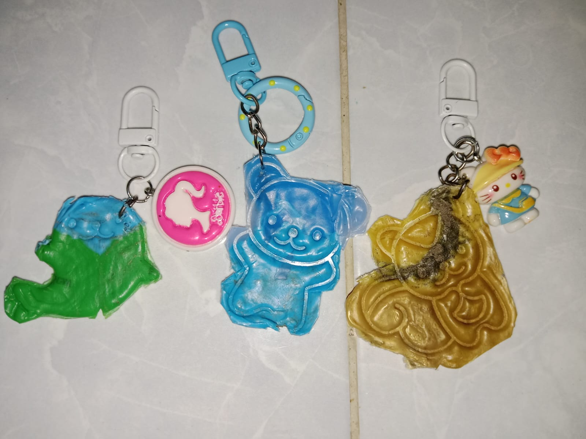

🍃
Energi Baik
untuk Bumi Lestari

Aksi kecil hari ini, warisan besar untuk generasi nanti.
‹ Fakta Edukasi
💡 Tahukah Kamu?
Tutup botol plastik yang kita buang sembarangan membutuhkan waktu hingga 450 tahun untuk bisa hancur dan terurai secara alami.
🧴
‹ Dashboard Aksi
📊 Hasil Kontribusi
300 pcs
Tutup botol terkumpul
± 1,78 kg
Limbah plastik berkurang
± 3,71 kg
Emisi CO₂ dihemat
‹ Misi Lingkungan
🎯 Upload Bukti Aksi
Tantangan Hari Ini:
Kumpulkan 5 buah tutup botol/sampah plastik!
‹ Asah Otak
🧩 Quiz Singkat
Manakah jenis sampah plastik berikut yang paling bernilai tinggi dan mudah didaur ulang?
‹ Inspirasi Karya
✨ Galeri Daur Ulang

Melalui kreativitas, tutup botol plastik diolah kembali secara mandiri menjadi kerajinan gantungan kunci estetik bernilai guna tinggi.
‹ Hubungi Kami
🤝 Mulai Langkahmu
Salurkan aksi nyatamu dan berkolaborasi bersama kami di kanal jejaring sosial resmi:
📢 Saluran WhatsApp Resmi 📸 Instagram: @tutupplastik.co 💬 WhatsApp Admin: 082362251706Powered by IT © 2026